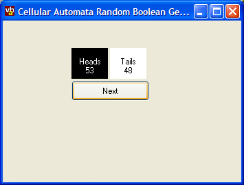
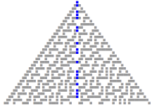

Random Sequence Generator (10K)
Random Sequence Generator (10K)
 23 Oct 2003
23 Oct 2003
First Posted
 Generating Long Sequences of Unique Numbers
Generating Long Sequences of Unique Numbers

Generating Random Boolean Sequences Using Cellular Automata
Get more randomness with this mathematical technique
This tip demonstrates how to generate a sequence of random boolean numbers using a cellular automata technique described in Stephen Wolfram's book "A New Kind Of Science". Unlike many other linear congruential generators, the output of this method has been shown to be free of repetition and statistically random.
Cellular Automata As Random Number Generators
Cellular Automata are systems in which the current state is captured in a series of cells. The next state of the system is then generated from the current state by application of simple rules which determine the new state of a cell based on the states of its neighbours. One of the simplest forms of this type of system uses a one-dimensional array of cells, and considers only the current cell and its immediate neighbours to the left and the right to determine the next state. Despite the simplicity of the rule, there are a number of rules which lead to extremely complex behaviour. As a consequence the output is a good candidate for use in generating random numbers.
Typically, computer systems use a shift register type approach to generating numbers, like the one described in the article Generating long sequences of random numbers. Analysis of the output of these generators has shown that the output isn't as random as it ought to be. If the numbers are plotted against previously generated numbers in one, two or three dimensions then stripes begin to appear in the output, whereas a truly random sequence would be distributed.
Class 30 One Dimensional Cellular Automata
In Wolfram's book, all the possible one dimensional cellular automata with two states are given a number (there are 256 of them). Class 30 is one of the four which generates complex non-repetitive behaviour, and that is used here. This automata has the following rules:
IF [cell - 1] = black THEN
IF [cell] = black OR [cell + 1] = black THEN
newCell = white
ELSE
newCell = black
ENDIF
ELSE
IF [cell] = black OR [cell + 1] = black THEN
newCell = black
ELSE
newCell = white
ENDIF
ENDIF
A diagram of the output of this automata when the initial condition is a single black square is shown in the diagram below:
Class 30 Cellular Automata Output - 32 Iterations
The centre squares, highlighted in blue are used to generate the random heads/tails result.
To completely generate the output of the algorithm, an infinite cellular space would be needed (since new cells are continually generated to the right of any previous cell). In practice, the size of the cellular space can be restricted to a much smaller number, typically around 200 and the cellular space wrapped around (so that the neighbour to the right of the rightmost cell is the leftmost cell and similarly for the leftmost cell).
Therefore to implement the algorithm we need two arrays of 200 cells each: one to hold the current state, and another to hold the next state. The version provided here uses a two dimensional array to hold the current and next states, and simply swaps the index between the two blocks at each generation. Here's the algorithm:
Private m_lSize As Long
Private m_cells() As Byte ' Using byte even though only two states needed
Private m_iIndex As Long
Public Function nextRandom() As Boolean
' determine the index to write into
Dim iNextIndex As Long
If (m_iIndex = 1) Then
iNextIndex = 0
Else
iNextIndex = 1
End If
' Calculate the automata
Dim i As Long
Dim iPrev As Long
Dim iNext As Long
iPrev = m_lSize - 1
For i = 0 To m_lSize - 1
iNext = (i + 1) Mod m_lSize
If (m_cells(m_iIndex, iPrev) = 0) Then
' output is white if me or next is black:
If (m_cells(m_iIndex, i) = 0) Or (m_cells(m_iIndex, iNext) = 0) Then
m_cells(iNextIndex, i) = 1
Else
m_cells(iNextIndex, i) = 0
End If
Else
' output is black if me or next is black:
If (m_cells(m_iIndex, i) = 0) Or (m_cells(m_iIndex, iNext) = 0) Then
m_cells(iNextIndex, i) = 0
Else
m_cells(iNextIndex, i) = 1
End If
End If
iPrev = i
Next i
m_iIndex = iNextIndex
nextRandom = m_cells(iNextIndex, m_lSize \ 2)
End Function
Private Sub Class_Initialize()
m_lSize = 200
ReDim m_cells(0 To 1, 0 To m_lSize - 1) As Byte
m_iIndex = 0
' seed the initial state
m_cells(m_iIndex, m_lSize \ 2) = 1
End Sub
Of course, since the initial state is always the same this algorithm will always yield the same output. To allow different outputs, different starting conditions can be used by seeding the generator (similar to the Randomize method in VB. Two methods are provided in the code: firstly one which takes a long value, and centres values of each of the 32 bits into the array, and secondly one which takes a byte array, which can be used to set longer initial seeds:
Public Sub Seed(ByVal fSeed As Long)
' determine the index to write into
Dim iNextIndex As Long
If (m_iIndex = 1) Then
iNextIndex = 0
Else
iNextIndex = 1
End If
' write the bits:
Dim lCentre As Long
lCentre = m_lSize \ 2
Dim i As Long
Dim j As Long
Dim pow As Long
pow = 1
j = lCentre - 16
For i = 0 To 31
If (j >= 0) And (j < m_lSize) Then
m_cells(iNextIndex, j) = ((fSeed And pow) = pow)
End If
j = j + 1
If (i >= 30) Then
pow = &H80000000
Else
pow = pow * 2
End If
Next i
m_iIndex = iNextIndex
End Sub
Public Sub SeedLarge(b() As Byte)
' determine the index to write into
Dim iNextIndex As Long
If (m_iIndex = 1) Then
iNextIndex = 0
Else
iNextIndex = 1
End If
Dim lSeedSize As Long
lSeedSize = UBound(b) - LBound(b) + 1
Dim j As Long
For j = 0 To lSeedSize - 1
m_cells(iNextIndex, j) = IIf(b(j + LBound(b)) > 0, 1, 0)
If (j > m_lSize) Then
Exit For
End If
Next j
m_iIndex = iNextIndex
End Sub
Conclusion
This tip provides a new boolean random generator for VB which uses a more uniformly random technique than the existing random generator.